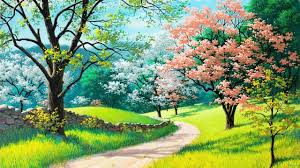

Spring
Spring is one of the four temperate seasons, following winter and preceding summer. There are various technical definitions of spring, but local usage of the term varies according to local climate, cultures and customs. When it is spring in the Northern Hemisphere, it is autumn in the Southern Hemisphere and vice versa. At the spring (or vernal) equinox, days and nights are approximately twelve hours long, with day length increasing and night length decreasing as the season progresses. Spring and "springtime" refer to the season, and also to ideas of rebirth, rejuvenation, renewal, resurrection and regrowth. Subtropical and tropical areas have climates better described in terms of other seasons, e.g. dry or wet, monsoonal or cyclonic. Cultures may have local names for seasons which have little equivalence to the terms originating in Europe